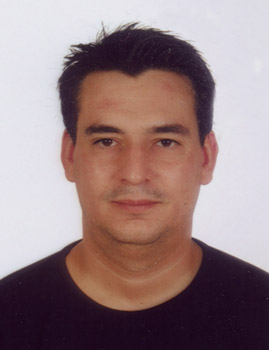

Rubén Romero Barrios
Rubén Romero Barrios  Rubén Romero Barrios
Rubén Romero Barrios 
 Haz clic aquí para detalles de la Familia de Rubén con Susana Milán García
Haz clic aquí para detalles de la Familia de Rubén con Susana Milán García
This page is within a frameset. View the entire genealogy report of Romero Barrios families, or surname index of Romero Barrios pedigrees or report summary of Romero Barrios heritage from "Árbol Genealógico de Manolo y Amalia".
Make a family tree.
© 2006 GenoPro Inc. All Rights Reserved.